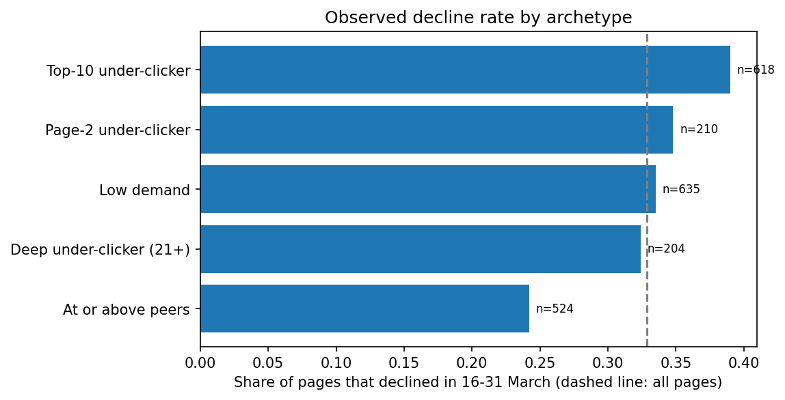

A readable rule held up against learned models once validation was honest
Ankit Thakur · FlyRank ML Internship capstone · October 2026 · Refresh / content opportunity scoring lane
Abstract. Which content pages lose search impressions in the second half of a month, and can early-month signals rank them better than a simple rule? Using 9.8 million daily Search Console rows from March 2026 (a 2,191-page sample), I built five features from 1–15 March and a label from 16–31 March, then compared logistic regression and a random forest with a readable peer-CTR baseline. Under a split grouped by client, no model clearly beat the baseline: Precision@50 was 0.38 and 0.22 for the models and 0.40 for the rule, against a 0.329 base rate (observed). A random split made the learned models look better (forest AUC 0.632 against 0.555), which shows how validation design can flatter a model (measured). The outcome is a rule-based, human-reviewed action queue for decision-support, with no causal claim.
1 Introduction
A content team can review only a limited number of pages each week, so the useful question is which pages to look at first. I frame it as a ranking problem: for each page, estimate whether its impressions will fall in the second half of the month, and order pages by that estimate. The output supports one decision, which pages an editor opens first. It does not say why a page fell and it does not say any edit would help.
2 Data
The analysis uses the FlyRank Internship Warehouse release (v20260703), a pseudonymized dataset on Hugging Face with gated access. I used one table, fact_content_daily_performance (one row per report date, client and content item), for the month 2026-03. All identifiers are hashed, and no client names, domains, URLs or queries appear in this paper.
| Check | Result |
|---|---|
| Grain: rows vs unique (date, client, page) keys | 9,841,378 = 9,841,378 |
| Span, clients, pages | 1–31 March · 55 clients · 331,437 pages |
Rows with Search Console data (IS TRUE) | 3,611,061 (about 37%) |
Rows with GA4 data (IS TRUE) | 413,966 (about 4%) |
What I excluded, and why. Rows without Search Console data, because a missing value is not a zero. All GA4 columns, because they exist for only about 4% of rows. Pages with fewer than 20 impressions in 1–15 March, because their rates are mostly noise. June 2026, which I kept sealed as a test month and never used to build the label. To fit in a notebook I used a 2% hash sample of pages, which leaves 2,191 pages, of which 32.9% carry the declining label.
3 Methodology
Decision moment and features. A reviewer looks at the queue at the end of 15 March, so every input uses only 1–15 March: early impressions, early clicks, early CTR, early average position and the number of active days.
Label. A page is labelled declining when its impressions per day in 16–31 March fall below 80% of its rate in 1–15 March. This is a defined rule on observed traffic and a proxy for “worth a human look”, not a measure of decay.
Baseline. A readable rule: score each page by the clicks it earned below what pages at the same average position earned (position groups 1–3, 4–10, 11–20), with peer CTR learned on training folds only. Each page gets a reason code and an action.
Models and validation. Logistic regression and a random forest (200 trees, depth 5) are compared with the rule on the same pages, using five folds grouped by client, so no client appears in both training and test data. As a “before” comparison I also ran ordinary random folds, in which nearly every test client was also in training.
Leakage checks. Every feature was checked as knowable at the decision moment. I added a column built from the label window on purpose: AUC rose from 0.555 to 1.0, the usual fingerprint of leakage, and I removed it. With shuffled labels AUC fell to 0.487, close to 0.5. Taking the baseline’s peer CTR from all pages instead of the training folds moved Precision@50 from 0.40 to 0.38, so that choice did not leak in any visible way.
4 Results
Figure 1 shows the main finding. The learned models looked better under a random split and lost that advantage once clients were kept apart. The rule hardly moved, because it learns only four peer-CTR values.
| Split | System | AUC | Precision@50 | Precision@100 |
|---|---|---|---|---|
| Random | Logistic regression | 0.598 | 0.44 | 0.52 |
| Random | Random forest | 0.632 | 0.54 | 0.50 |
| Random | Peer-CTR rule | 0.570 | 0.38 | 0.42 |
| Grouped | Logistic regression | 0.560 | 0.38 | 0.39 |
| Grouped | Random forest | 0.555 | 0.22 | 0.32 |
| Grouped | Peer-CTR rule | 0.572 | 0.40 | 0.43 |
Interpretation (directional). Under the honest split, every AUC is between 0.555 and 0.572, so these five early signals carry only weak information about decline, and a rule an editor can read does as well as the models. The random forest leans most on early CTR and early position (permutation importance 0.095 and 0.041 on one fold), the same two signals the rule uses.
What the errors look like. Of logistic regression’s top 50 pages, 31 did not decline. Many are large pages with a CTR close to zero, and several grew by 12% to 94% in the second half, so low CTR on a big page is not the same as a declining page. The missed declines are mostly pages with a moderate CTR for their position that still fell 38% to 65%.
5 Limitations and honest framing
- One month (March 2026) and about 2,200 pages from a 2% hash sample; another month could differ.
- Search Console signals only; GA4 covers about 4% of rows, so nothing here speaks to on-site behaviour.
- The split is by client within one month, not across time.
- The label is a proxy and includes regression to the mean: high-impression pages are likelier to fall back.
- Peer CTR is estimated from the same sample it scores.
- No causal claim is made. Nothing here shows that an edit would recover traffic or how Google ranks pages.
6 Ranked recommendations
The playbook is built on the rule rather than a model, because no model clearly beat it and an editor can read it. Each page in the queue gets a score (clicks below same-position peers), one reason code and one action. The queue holds 1,032 of the 2,191 pages, and the top 50 had Precision@50 of 0.40 against a 0.329 base rate (observed; a gap of about 7 points is within chance for 50 pages).
| Archetype | Reason code | Action (human review required unless noted) | Pages | Declined |
|---|---|---|---|---|
| Top-10 under-clicker | CTR_BELOW_PEERS_TOP10 | Rewrite title and meta description | 618 | 39.0% |
| Page-2 under-clicker | CTR_BELOW_PEERS_PAGE2 | Improve content depth and intent match | 210 | 34.8% |
| Deep under-clicker (21+) | CTR_BELOW_PEERS_DEEP | Review search intent; merge or prune only after a human check | 204 | 32.4% |
| Low demand | LOW_DEMAND | Monitor only, no review | 635 | 33.5% |
| At or above peers | AT_OR_ABOVE_PEER_CTR | Protect, no change | 524 | 24.2% |
Top-10 under-clickers declined about 15 points more often than pages at or above peer CTR, which is directional support for putting them first.

Human review
A person opens every queued page before any change. They check for recent edits and seasonality, review at most about 50 pages per batch, and record accept or reject with a reason. Reason codes are hints about where to look, not causes.
Do not automate
Rewriting titles or descriptions; merging, pruning, redirecting or deleting pages; promising traffic recovery; judging an author, team or client by the score; publishing without review; comparing pages across clients as if they shared one baseline.
Cost and value
Assuming 30 minutes per page, a batch of 50 takes about 25 hours. Random picking would find about 16.4 declining pages in 50 and the queue about 20.0, a difference of 3.6 that is within noise. The value is a consistent, explainable order for review, not extra accuracy.
Monitoring
Proposed, not tested: recompute Precision@50 each month and revisit the rule if it is within 7 points of that month’s base rate for two months in a row; re-check the label if the declining share moves more than 5 points from 32.9%; re-run the data checks when data availability changes; rebuild the four peer-CTR values monthly.
7 Reproducibility
All work is in the repository. Notebooks are in work/notebooks: framing (w02), data contract (w03), baseline (w04_baseline_score), model comparison (w05), validation audit (w06), action playbook (w07) and capstone. To rerun, request access to the Hugging Face dataset, store a read token as a Colab secret named HF_TOKEN, and run a notebook top to bottom. Rows are sorted before modelling so results repeat. The ranked queue CSV is regenerated by the notebooks and is not committed.
8 Acknowledgments and data credit
Built on the FlyRank ML Internship dataset, a pseudonymized warehouse release provided by FlyRank for education and research. Thanks to the FlyRank ML Internship team for the sessions and the skeleton notebooks.